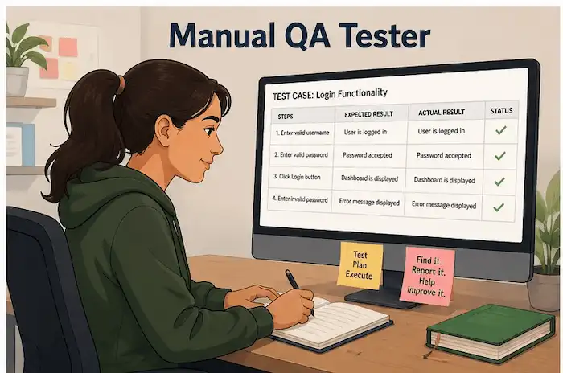
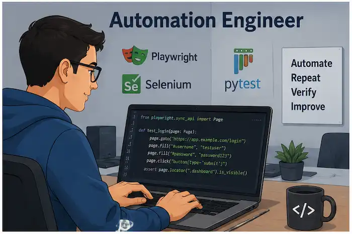
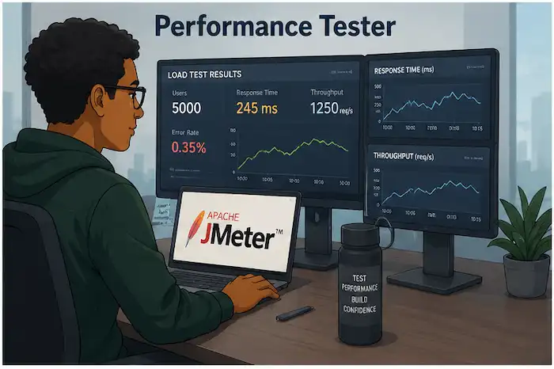

Manual QA Tester

Executes test cases, reports defects, and verifies that software meets business requirements.
Software Quality Assurance offers a variety of career paths. Whether you enjoy manual testing, automation, or leadership, there are opportunities to grow your skills and contribute to building reliable software.

Executes test cases, reports defects, and verifies that software meets business requirements.

Develops automated tests using tools such as Playwright, Selenium, and Cypress.

Evaluates application performance, scalability, and stability under different workloads.
Leads testing teams, develops quality strategies, and works closely with developers and product managers.